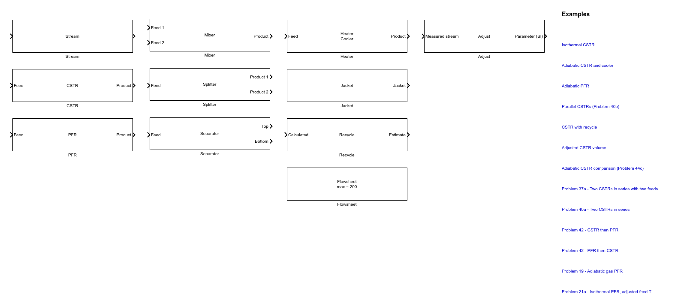

Connect material streams, reactors, heat-transfer units, recycles, and design specifications in a Simulink diagram. Each named Stream carries flow, composition, temperature, pressure, phase, and solution status between the process blocks.
Before You Start
Open the main Non-Ideal Reactor Plus screen. Decide whether you need a blank model or a solved example, and choose a writable folder for a new model.
Where to begin: the flowsheet tools are in the Flowsheet (Simulink) group on the main screen, not inside either reactor-analysis app.
Create or Open a Flowsheet
In the main window, Non-Ideal Reactor Plus, press New flowsheet... in the Flowsheet (Simulink) group. The first time, a loading message appears while Simulink starts.
Complete the Reactive System window and press Create flowsheet.... Choose a writable name and location for the new model.
For a solved case, press Open example... in the same group, select the description you need, and press OK.
Press Open block library in the same group. Drag blocks from the library into the model and double-click a block to edit it.
Use the Block Library

The block library contains every process block and direct links to the solved examples.
Drag the required Feed, Stream, reactor, and Product blocks into the model.
Place a named Stream between material-processing blocks.
Connect scalar signals and Jacket signals directly to their dedicated ports.
Double-click each block and complete its visible specifications before running.
Values entered in dialogs may use the displayed units.
Frequent Errors
Symptom
What to do
Blocks are directly connected
Insert a named Stream between material-processing blocks. Direct scalar and Jacket signal connections are valid.
The new model cannot be saved
Choose a writable folder and a valid model name.
The library appears slowly
Allow the first Simulink start to finish before pressing another launcher button.
Next Steps
Define components, reactions, kinetics, thermodynamics, feeds, and run settings before configuring process blocks.